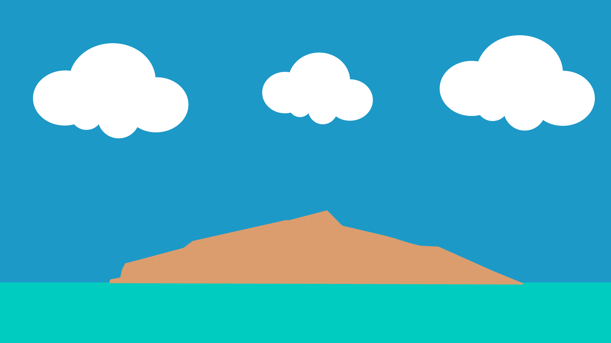

For this project, I transformed a landscape photograph into a simplified vector illustration using Adobe Illustrator. I traced the main elements of the scene—the sky, clouds, ocean, and island—using the Pen Tool and basic shape tools. Instead of copying every detail, I focused on reducing the environment into clean geometric forms and a limited color palette. I created this project to communicate the idea that everyone deserves rest, no matter their profession or social status. In the image, different workers such as healthcare professionals, a construction worker, and a businessman are placed in the same beach environment to show equality under a shared human need: relaxation. The lion in the center symbolizes strength and power, reinforcing the message that even the strongest individuals need time to pause. Through this visual contrast between work uniforms and a vacation setting, I wanted to emphasize that rest is not a luxury, but a universal right.

Click to go back to main html page